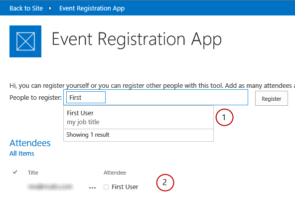

Summary: Learn how to use the Office Web Widgets - Experimental together in an app that is not hosted on SharePoint.
Last modified: February 20, 2014
In this article
Description of the sample
Prerequisites
Key components of the sample
Configure the sample
Run and test the sample
Change log
Related content
This provider-hosted app shows how to use the Office Web Widgets - Experimental together. The app uses the People Picker and Desktop List View experimental controls along with the Chrome control.
| Caution |
|---|
|
The Office Web Widgets - Experimental are only provided for research and feedback purposes. Do not use in production scenarios. The Office Web Widgets behavior may change significantly in future releases. |
Description of the sample
The sample consists of a simple app that lets the user register herself or some other people to an event. The app uses the (1) People Picker experimental control to help the user locate people in the organization. The app also uses the (2) Desktop List View experimental control to display a list of already registered people. The Chrome control provides the style sheet and header of the app.

Prerequisites
This sample requires the following:
-
Microsoft Visual Studio 2013
-
A SharePoint 2013 development environment (app isolation required for on-premises scenarios). If you need help setting up a development environment, see Get started developing apps for SharePoint.
Key components of the sample
The sample contains the following:
-
OfficeWebWidgetsDemo project
-
Attendees list, the Desktop List View control displays the data from this list.
-
Readme.aspx page, that is an online readme and start page.
-
-
OfficeWebWidgetsDemoWeb project
-
Demo.html page, which hosts the controls.
-
Scripts and resources required by the controls.
-
Configure the sample
Follow these steps to configure the sample.
-
Update the SiteUrl property of the solution with the URL of your SharePoint website.
Run and test the sample
-
Press F5 to build and deploy the app.
-
Choose Trust It on the consent page to grant permissions to the app.
You should see the Readme.aspx page.
Change log
-
First version: March 2014